Early lift from Ortisei
Take the first practical connection toward Seceda. Morning often offers the cleanest visibility and calmest trails.
Do not miss: the main ridgeline viewpoint.
Two nights in Ortisei, with the weather—not the clock—deciding whether Seceda or Alpe di Siusi comes first.
Keep both mountain days interchangeable. Use the earliest clear weather for Seceda, where the dramatic ridge is the trip’s essential high-alpine view. Save Alpe di Siusi for the softer day: meadow walking, broad panoramas and a long rifugio lunch.
A flexible sequence that gives you the best chance of clear views without turning the visit into a race.
Take the first practical connection toward Seceda. Morning often offers the cleanest visibility and calmest trails.
Do not miss: the main ridgeline viewpoint.Walk only as far as footing, wind and comfort permit. The experience is the landscape, not the mileage.
Choose a rifugio terrace for speck, canederli, Schlutzkrapfen or strudel. Make lunch the memorable meal of the day.
Browse the pedestrian center, rest at the hotel and keep the late afternoon unscheduled.
Enjoy aperitivo and dinner in Ortisei rather than adding another drive after a full mountain day.
The jagged Odle ridgeline is the image most travelers carry home from Val Gardena.

The value of Seceda is concentrated near the upper station and ridge. You do not need a strenuous hike to experience the scale of the mountains.
Wear shoes with real grip and carry a light insulating layer even when Ortisei feels warm.
Wide-open meadows, scattered huts and broad views make this the most forgiving high-alpine experience.

This is the day to trade distance for atmosphere. Choose a modest meadow route, stop often and plan a leisurely lunch.
Easy walking, photography and a relaxed pace.
Visibility is so poor that the plateau loses its defining views.
Morning lift, gentle loop, long lunch, early return.
Mountain roads are slow, photogenic and tiring. One focused loop is better than collecting passes.
The highest-value drive close to Ortisei, with immediate rock scenery and manageable commitment.
Best short driveA natural extension when weather and energy remain good.
Add selectivelyBeautiful, but too ambitious as a casual add-on to a lift day or transfer day.
Plan separatelyA rewarding photography detour only when it fits the route and the sky is clear.
Photo-focusedChoose routes where the scenery begins immediately and turning back never feels like failure.

Short viewpoint routes near lifts provide the best scenery-to-effort ratio.
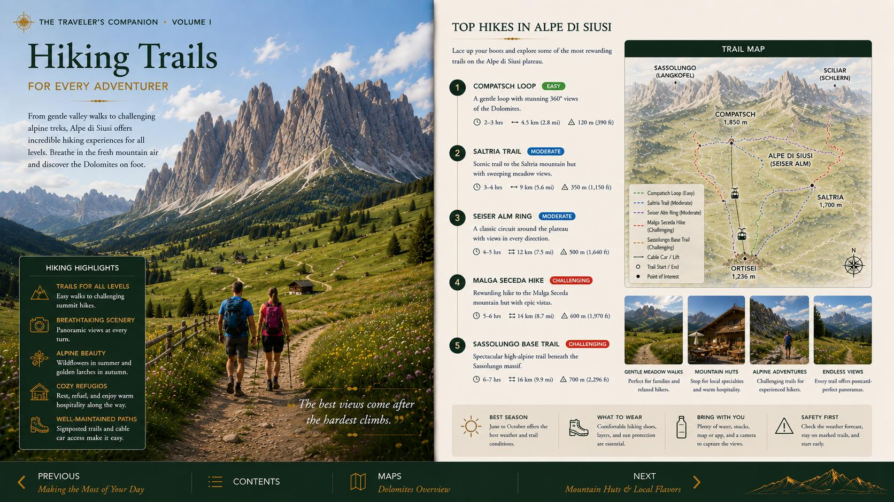
Gentle rolling terrain at Alpe di Siusi with frequent hut stops.

Walk until the view, weather or footing tells you to turn around.
Val Gardena’s Ladin, Tyrolean and Italian influences meet most naturally at lunch in a mountain hut.
Smoked cured ham, often served with bread, cheese and pickles.
Bread dumplings served in broth or with butter and cheese.
Half-moon pasta, commonly filled with spinach and ricotta.
The right finish after a cool mountain walk.
Reserve the largest appetite for midday and keep dinner lighter.
Book ahead for popular dining rooms during busy mountain weeks.
Small decisions matter more here than squeezing in another attraction.
Check both valley and summit conditions; they can be completely different.
Verify operating dates and weather holds the evening before and again in the morning.
Carry a rain shell and insulating layer even on a warm valley day.
Use shoes with dependable traction; smooth soles are a poor trade for style.
Allow generous time for cyclists, buses, hairpins and photo stops.
Do not add a major pass loop before the long drive to Cinque Terre.
The restored Traveler’s Edition spreads remain available as a visual field guide.
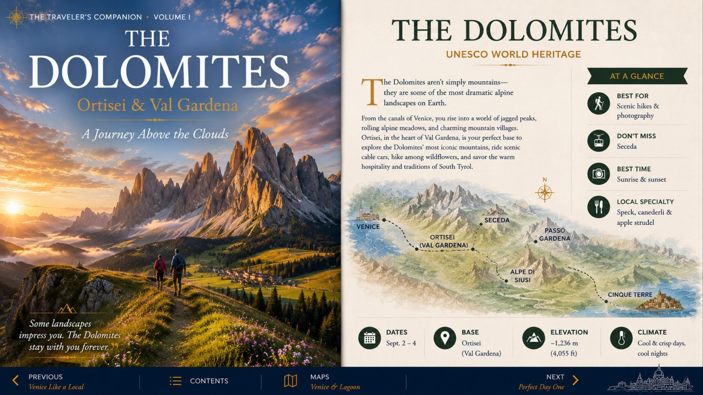
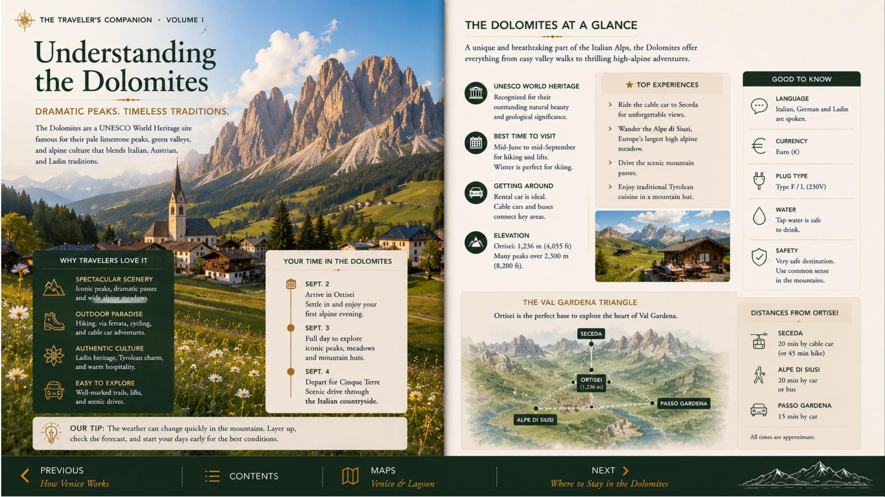
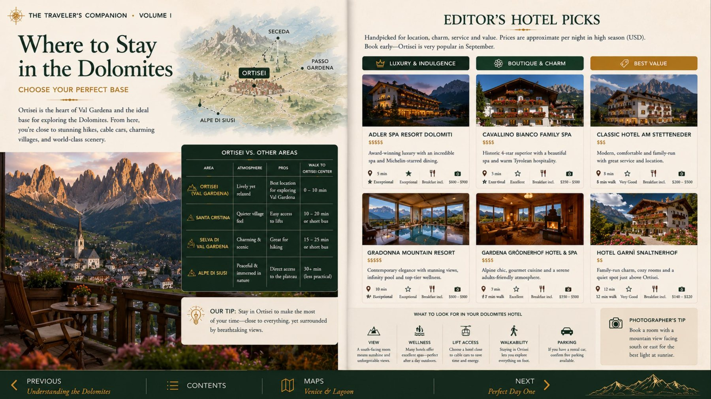
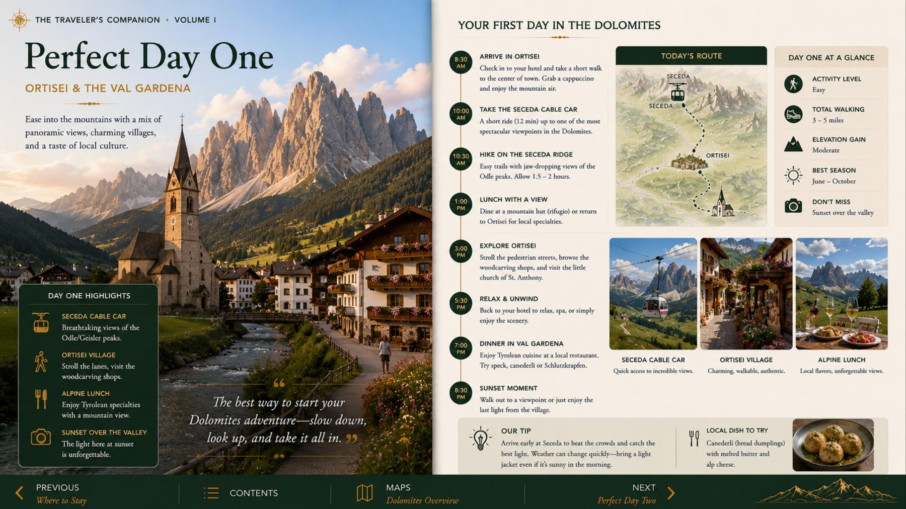
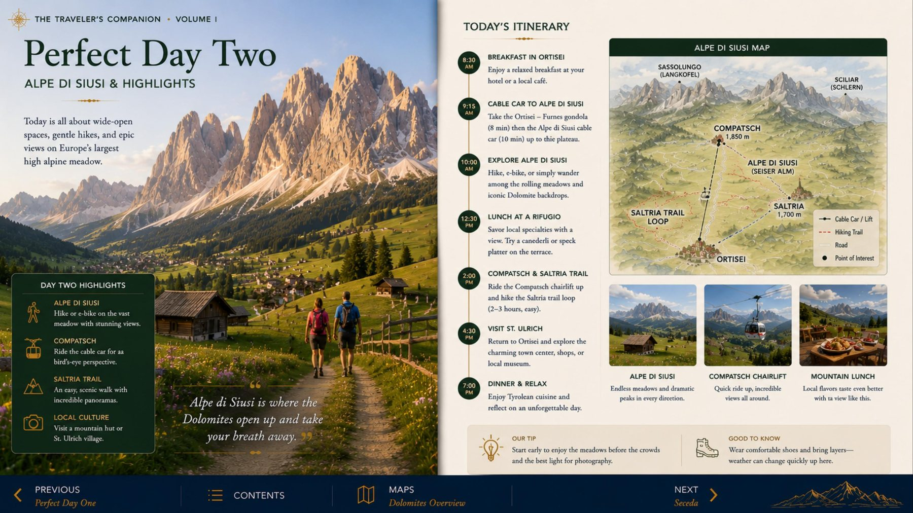
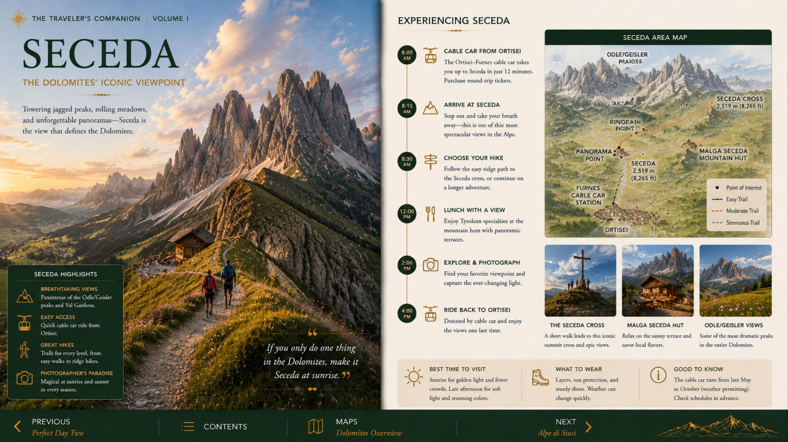
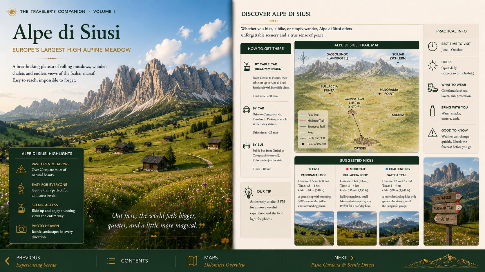
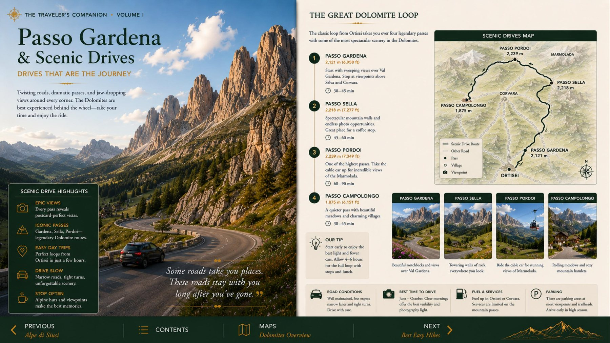
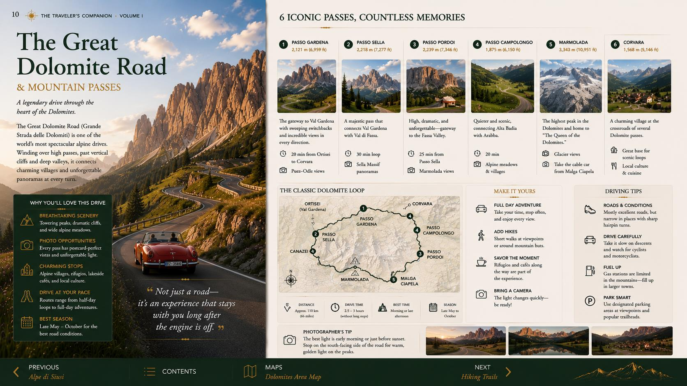
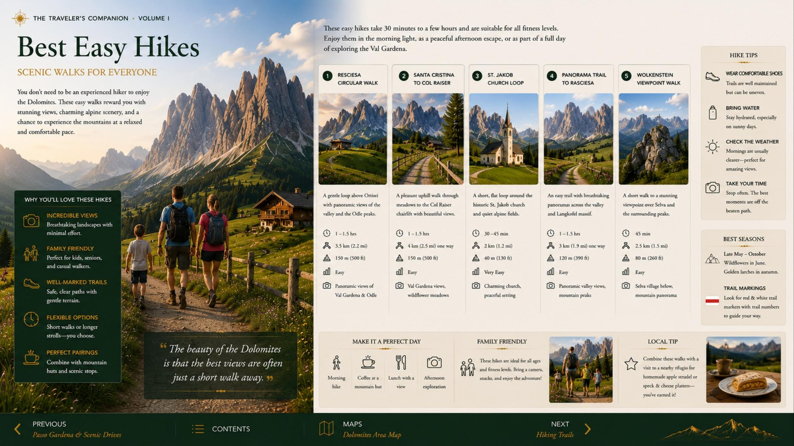
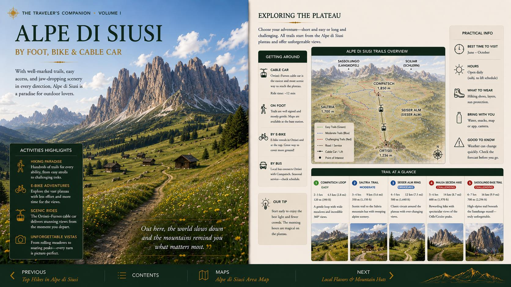
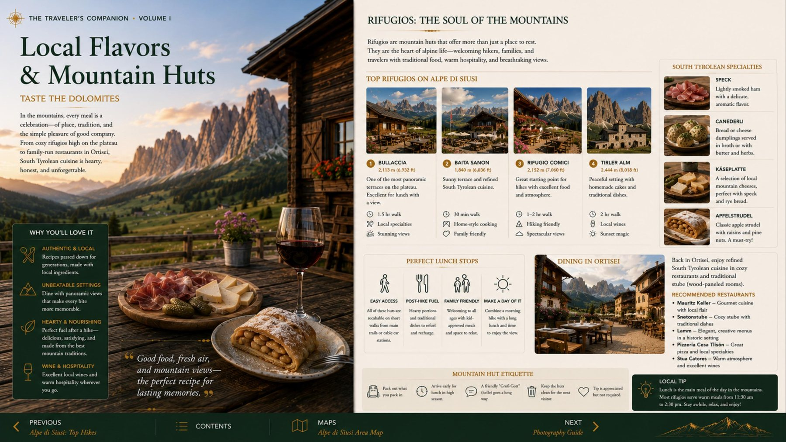
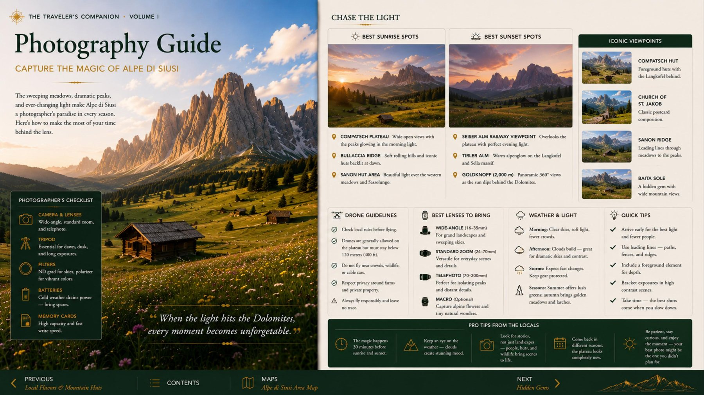
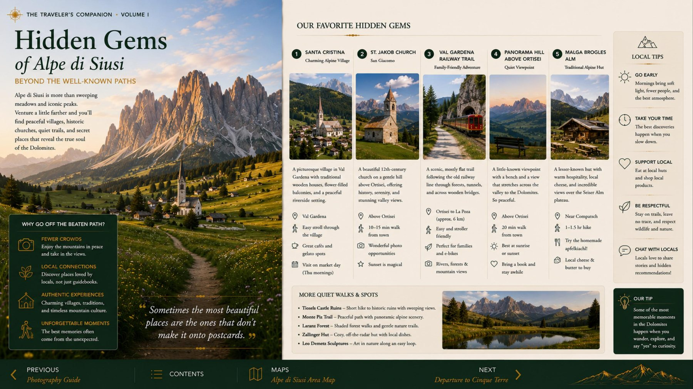
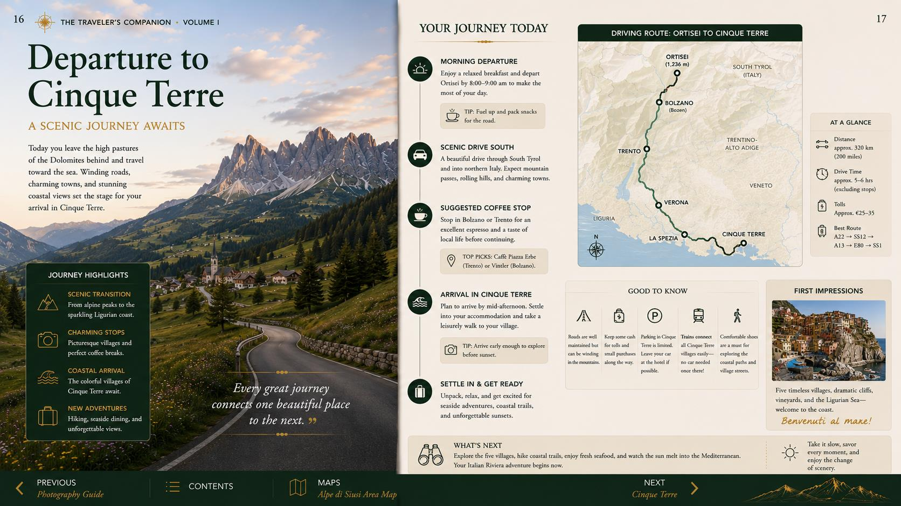